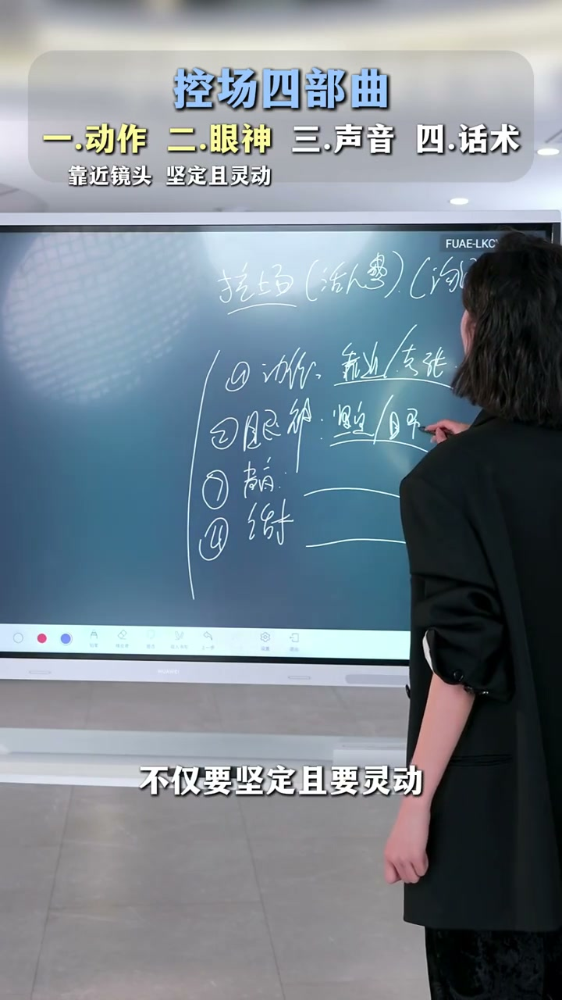
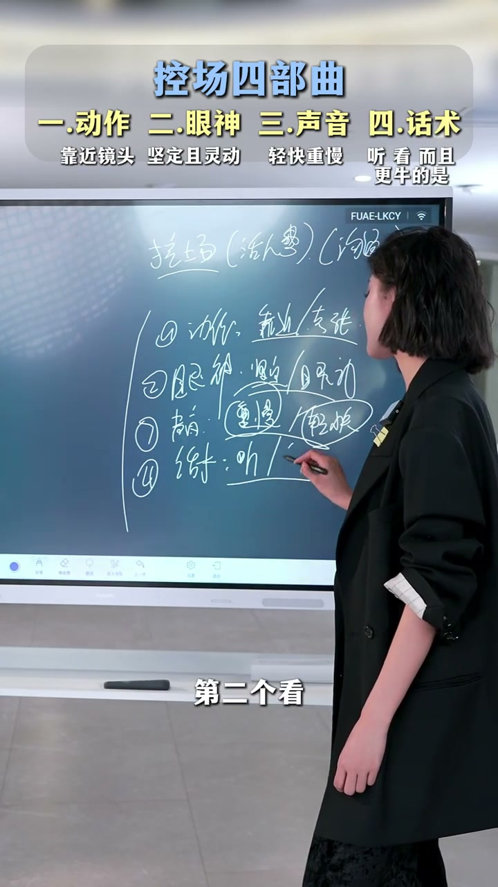

控场四步曲总览
00:00控场四步曲，把这四步做到你就会有控场：第一步动作，第二步眼神，第三步声音，第四步话术。这四步有了，就一定能控住场。
[00:02] 控场四步曲：动作、眼神、声音、话术
The four-step stage control: movement, eyes, voice, script
第1步：动作靠近镜头
00:11每次控场的时候，动作靠近一下镜头——“听，我跟你讲”。目的是引起用户的注意，把观众从刷屏中拉回来。
[00:14] 动作：靠近镜头，“听，我跟你讲”——引起注意
The move: stepping toward the lens, “listen, let me tell you” — to grab attention
第2步：眼神坚定且灵动
00:19主播的眼神不仅要坚定，且要灵动。坚定传递可信度，灵动拉近距离感。

[00:22] 眼神：坚定+灵动
The gaze: steady + lively
第3步：声音慢下来，重话重讲
00:24想要控场的时候，声音一定要慢下来——不要像激光枪“嗒嗒嗒嗒嗒”一样快。接下来有个很重要的点：一定要对人讲，瞬间抓住用户的注意力。
00:32节奏原则：重要的话重讲，其他的话轻快讲。

[00:38] 话术：听、看；重要的话重讲，其他话轻快讲
Script: listen, watch; repeat the important lines, keep the rest light
第4步：话术——听、看
00:36控场话术就一个点：听、看。
00:39更牛的示范：“如果人生中只买一支包，一定是我接下来这一支——黑金方包，非常大气、非常高级。你想找一支包，又质感、又高级、又百搭、又能装、又经典，一定是这一支。看好了，不要眨眼睛，睁大你的眼睛，3 2 1 走！”
[00:54] 话术示范：“3 2 1 走！”——控场后引出产品
Script demo: “3, 2, 1, go!” — reining the room in before unveiling the product
重要的话之前都要控场，这样子你的话才更加的深入人心。